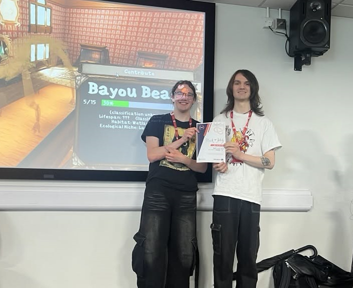

Winner of the "Best Game Mechanic Award" from the University of Staffordshire!


Overview
MADE AS PART OF LANTERN LIT GAMES
Made as part of my Junior Collaborative Game Development Module at the University of Staffordshire, Flick and Fetch is an Adventure Archeology Game where players
explore procedurally generated caves, uncover fossils, fill their museum!
My work on this project was primarily mechanics design, my main goal throughout the project was to design the mechanics and ensure that all members of the tech team were informed on how mechanics should behave.